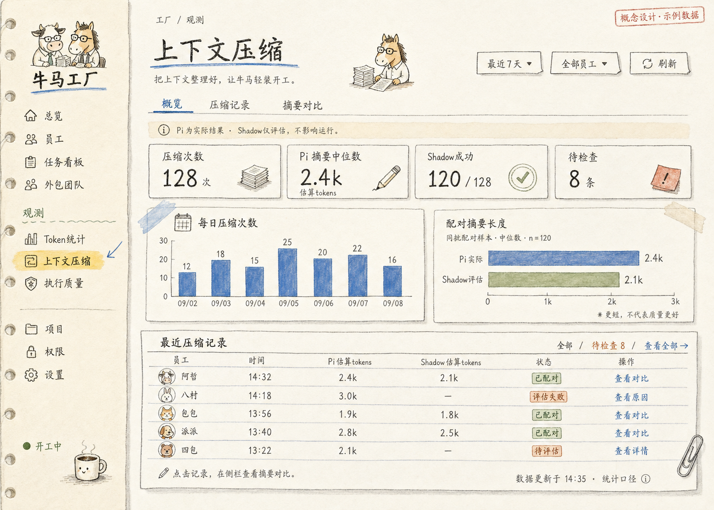

<!doctype html><html lang="zh-CN"><meta charset="utf-8"><meta name="viewport" content="width=device-width,initial-scale=1"><title>牛马手绘工作室 · 独立小样</title><link rel="stylesheet" href="layout.css"><link rel="stylesheet" href="skins.css">
<main><header><div><h1>牛马一起，轻装开工</h1><small>SVG 动画小样 · 不连接工厂 API，不启动员工</small></div><label>皮肤 <select id="skin"><option value="classic">现有配色参考</option><option value="handdrawn">手绘工作室</option></select></label></header>
<section class="stage"><div class="controls"><label>动作 <select id="action"><option value="running">轻快跑步</option><option value="sprinting" selected>加速快跑</option><option value="grazing">悠闲吃草</option></select></label><span id="actionNote" aria-live="polite"></span><button id="motion" aria-pressed="false">暂停动画</button></div><small>自动尊重系统“减少动态效果”设置。此小样没有绑定真实任务状态。</small></section>
<details><summary>已保留的手绘压缩页设计图</summary></details>
<p><a href="sprinting-mascots.svg">快跑 SVG</a> · <a href="grazing-mascots.svg">吃草 SVG</a> · <a href="running-mascots.svg">轻快跑步 SVG</a> · <a href="README.md">设计与实施边界</a></p></main><script src="preview.js"></script></html>
